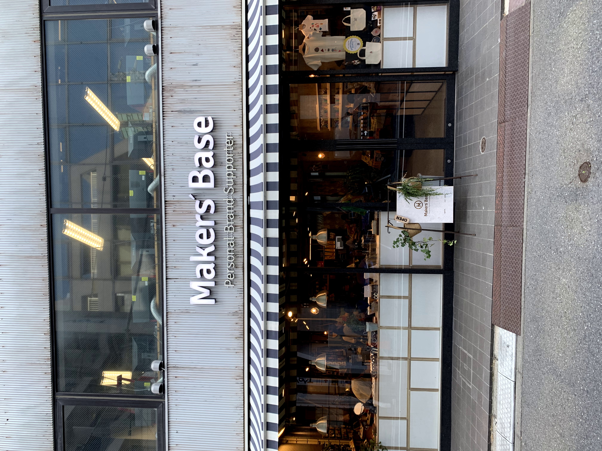
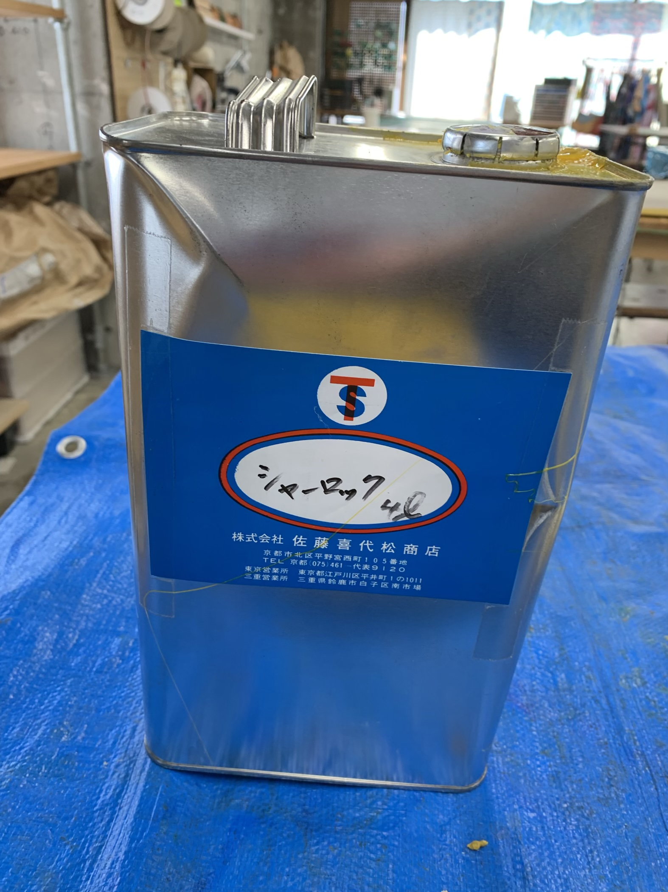
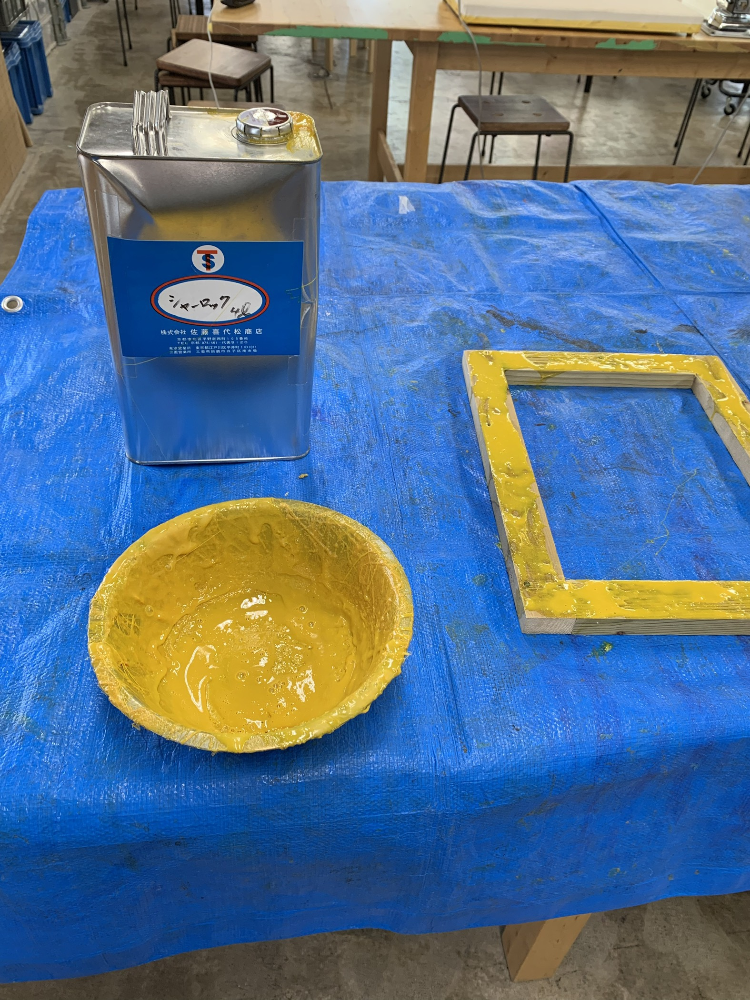
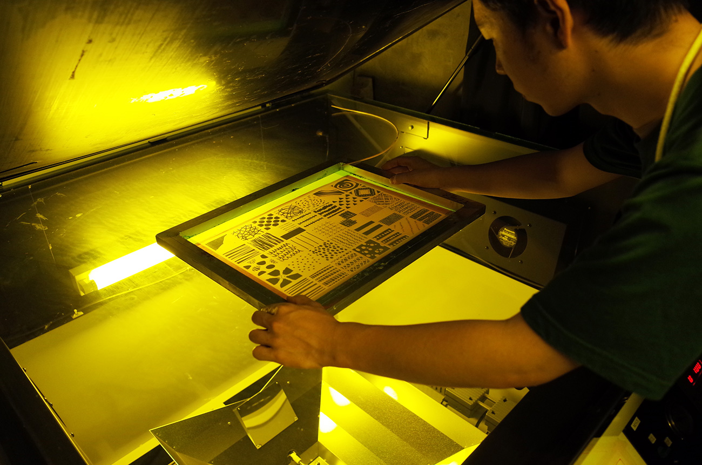
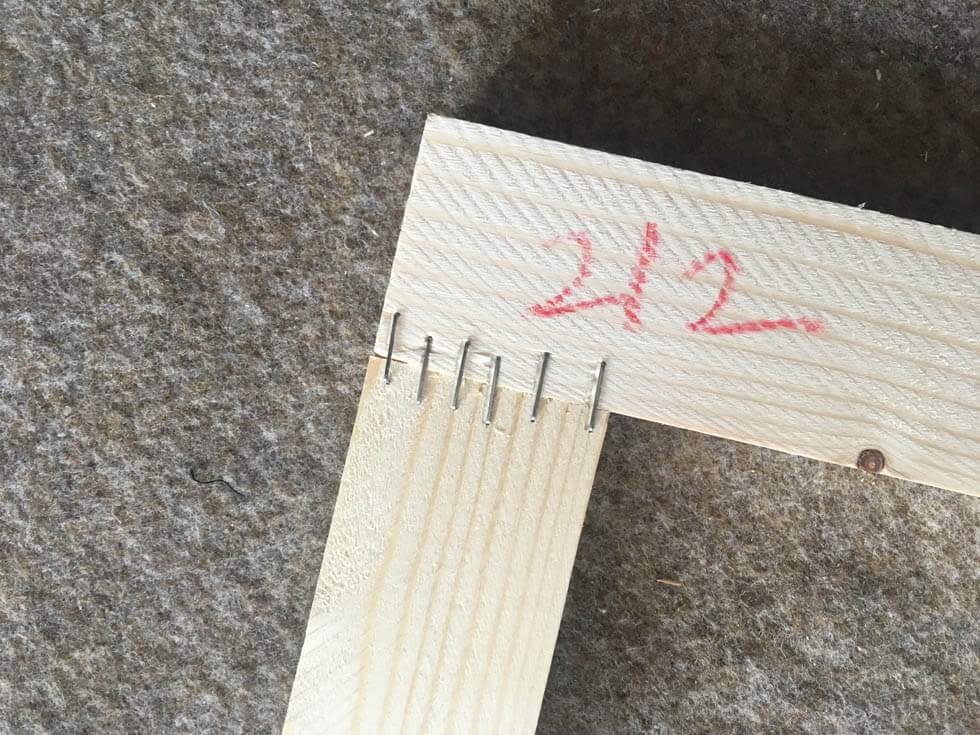
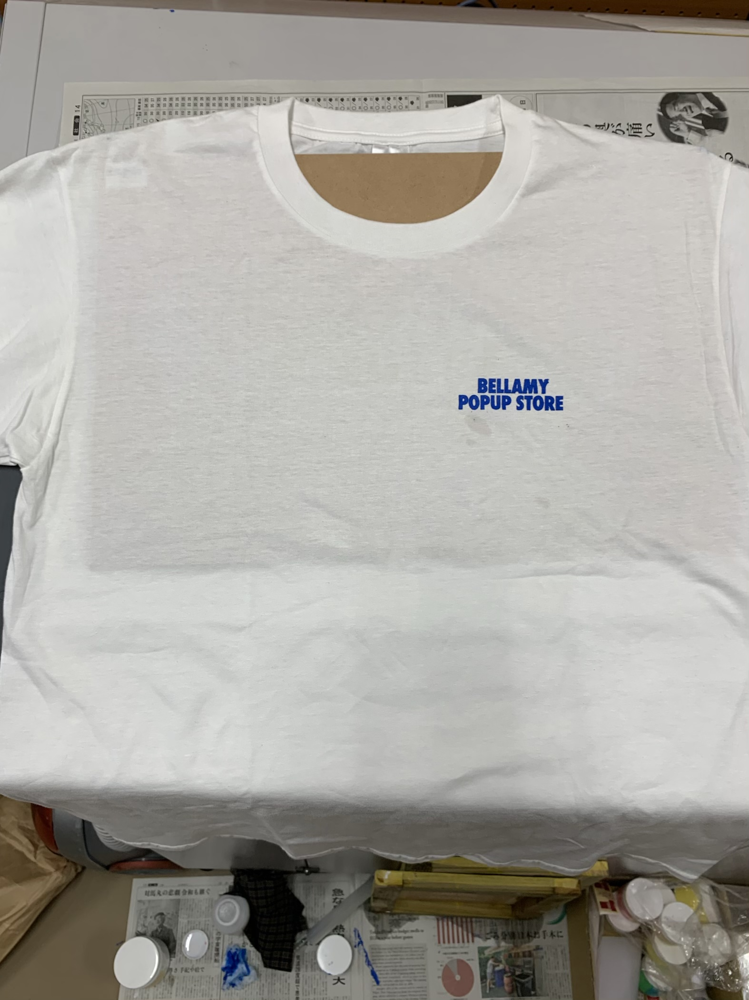
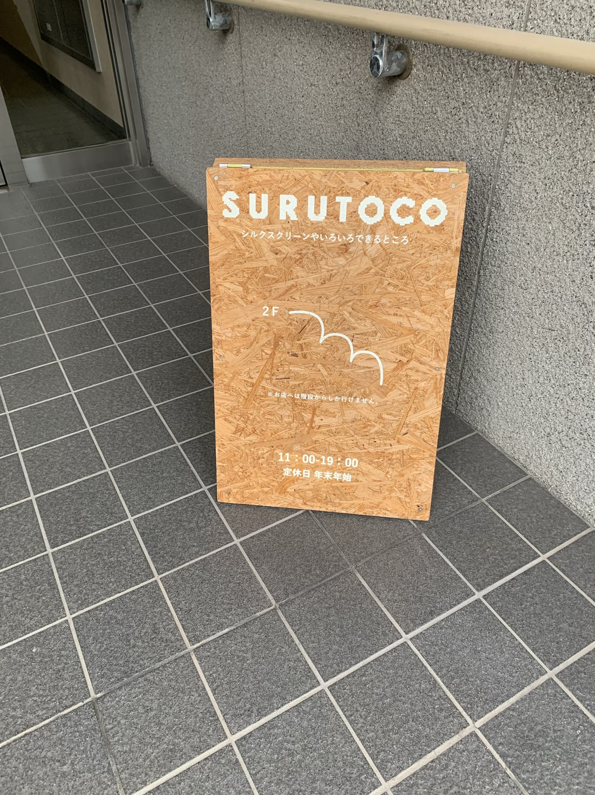
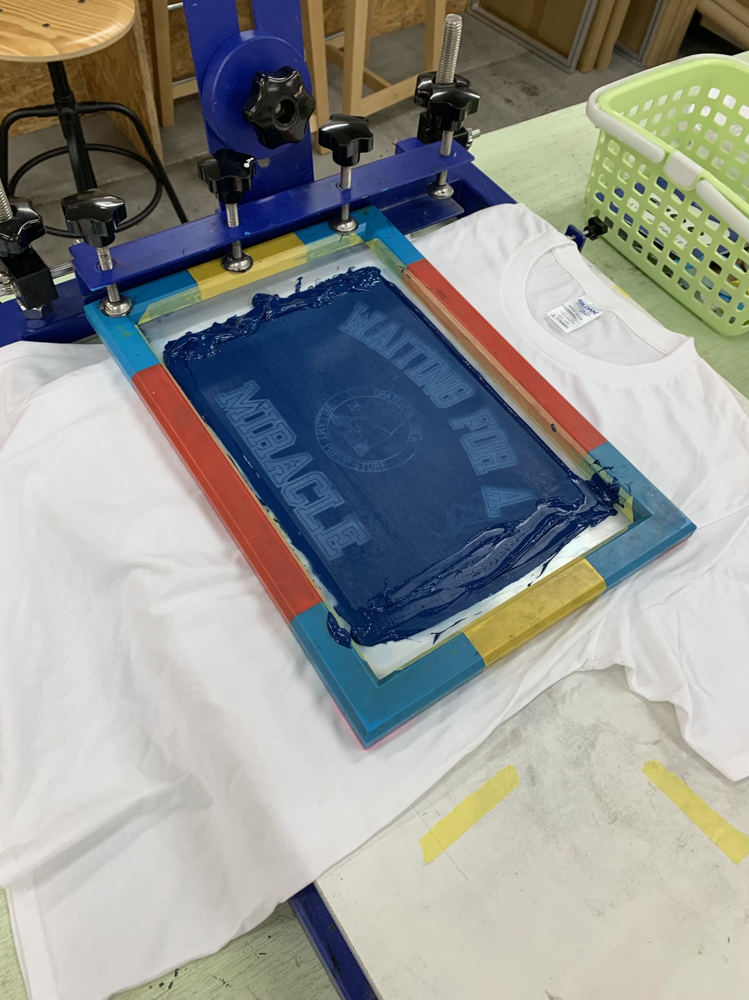
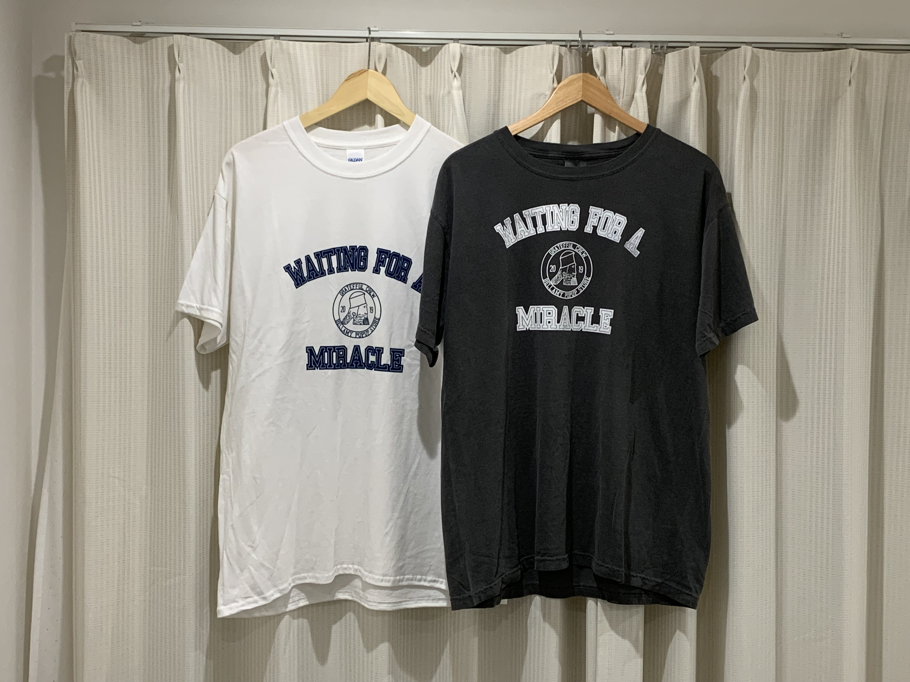

夏休み 製品づくり
デザイン
夏休み中、デザインのメイキングに困っていた。
人にウケるものがいいのか、自分の味を出していくのか。
夏休みのほとんどをデザインに費やししまった。
今まで絵を描いてこなかったため、イメージ通りのものができなかったり、イラレの慣れなさに困りながら製作した。
また、Tshirtの歴史についても1から勉強してみた。
製版
学校にあるステッカータイプのシルクスクリーンでは大量に刷るßことができない。
サイズも限られるてしまうため、大きめのサイズで何度も刷ることができるシルクスクリーンを作ろうとした。
シルクスクリーンをやってきたが、しっかり習ったことがないためシルクスクリーンの講義を受けた。

MAKERS BASE 都立大学
ステッカータイプではない製版は紗を貼ることで何度も使うことができる。
＜習ったこと＞
枠にのりを貼る。固まっているものは、シンナーで薄く塗ると溶けるため、紗を張り替えて何度も使うことができる。


のりを塗ったが、塗りすぎたため、ムラが出てしまった。
表面がぼこぼこしているため、スクリーンするときにムラができてしまう。
暗室で枠に紗を張ったものに、感光乳剤を薄く塗る。
これがなかなか難しい。薄く塗るために一定の力加減で素早く塗らないといけない。
泡が立ちやすく、穴が空いてしまった。

塗って固まった、感光乳剤を黒く塗ったトレーシングペーパーを下に置き、露光させる。
露光させた製版をすぐに洗うと、トレーシングペーパーで黒く塗ってあるところが抜けて、色が通るようになる。
乾かして、最後にトートバッグにインクを塗った。

何度か来て、製版した。アルミフレームだと費用がかかってしまうため、木枠をタッカーでつないで作った。

スクリーンした後。

＜問題＞感光の際に泡が立ってしまうため、スクリーンをするとうまく塗れない。
木枠に感光したスクリーン。あまりうまくいかなかった。

うまくスクリーンを作れない状態でいると、簡単にシルクスクリーンを作れて、安く済むところがある。と聞き、予約して直行した。→＜スルトコ＞
スルトコ

スルトコというところは、感光をせずにデータを送ることで製版することができる。
枠も組み立てることができ、簡単にスクリーンをできるようにした場所だ。
一日いて、５００円で場所を借りることができる。
製版の手間はほぼなく、誰でも高クオリティーの版を得られる。
ボディはあらかじめ用意していたものに刷った。
ギルダンのウルトラコットン白とコンフォートカラー黒を選んだ。両方とも１００％コットンで刷りやすいものだった。
あらかじめ作っておいたデータを印刷し、スクリーンした。２５枚ぐらい刷り、２０枚ぐらいはうまく行ったが他はダメだった。

インクが固まってしまう前にもっと早く刷る必要があった。
しかし思っていたよりもいいものができた。

MARKESTA in FUJISAWAへ